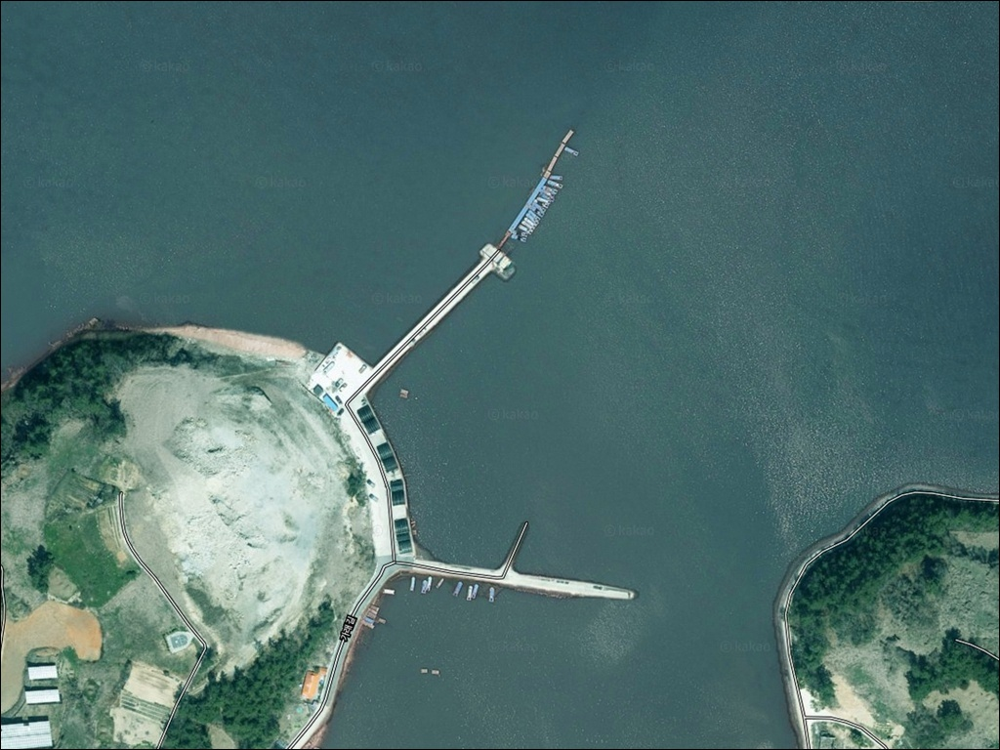
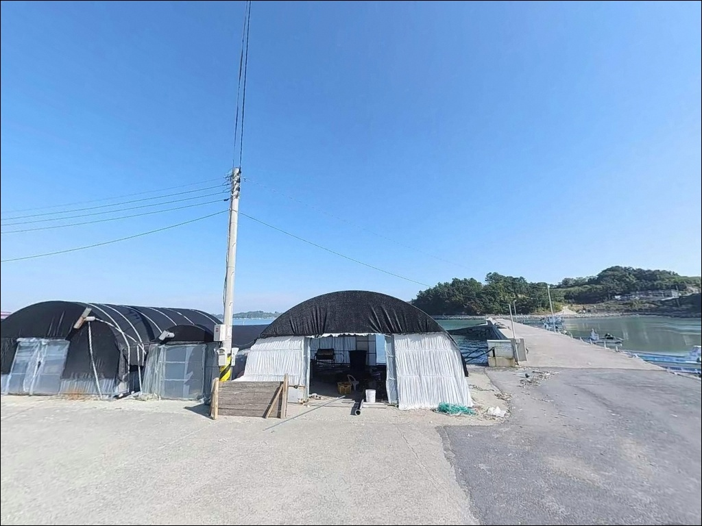
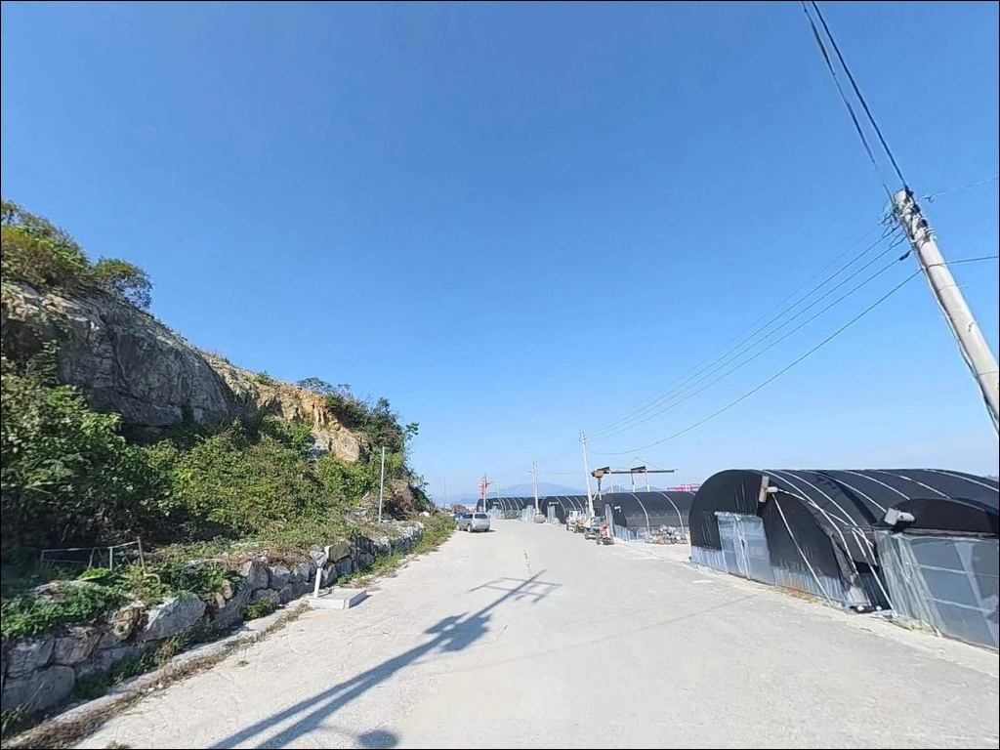
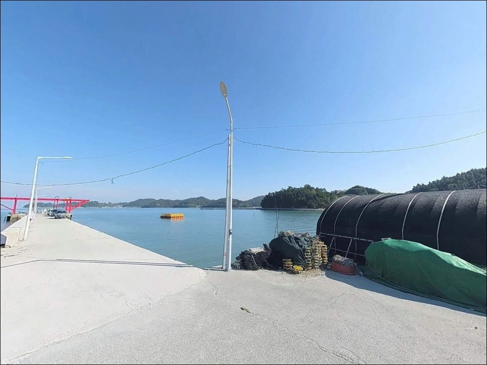
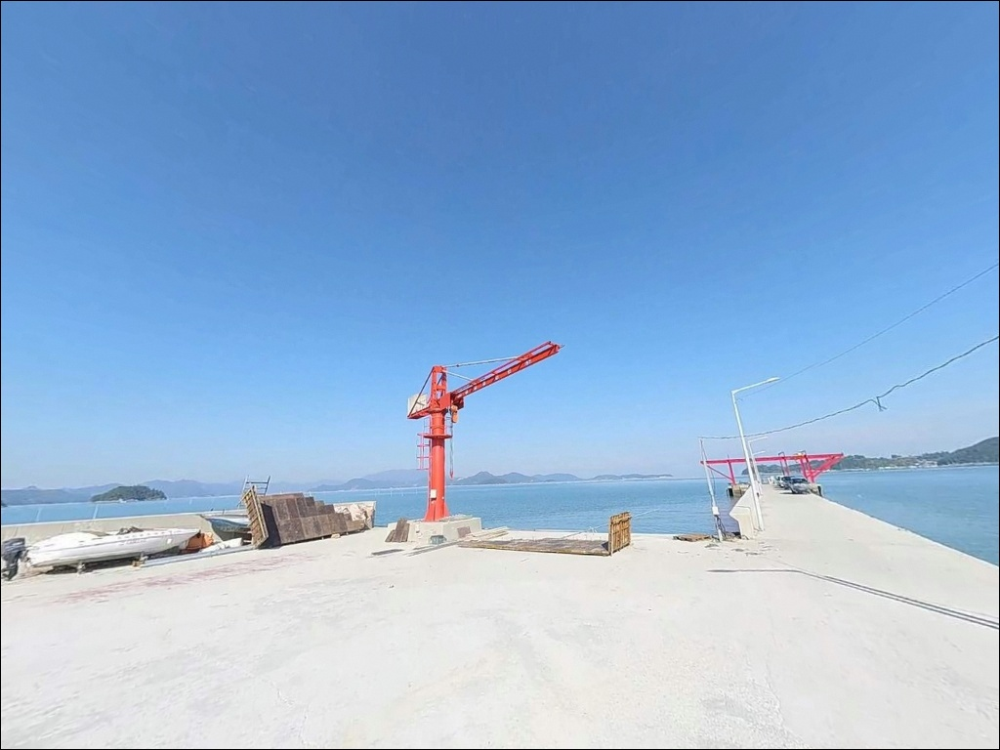
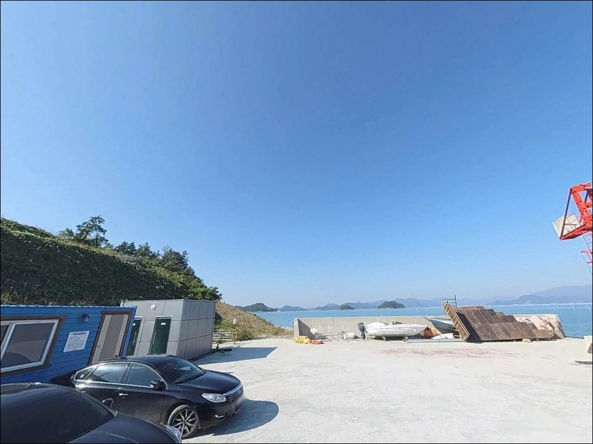
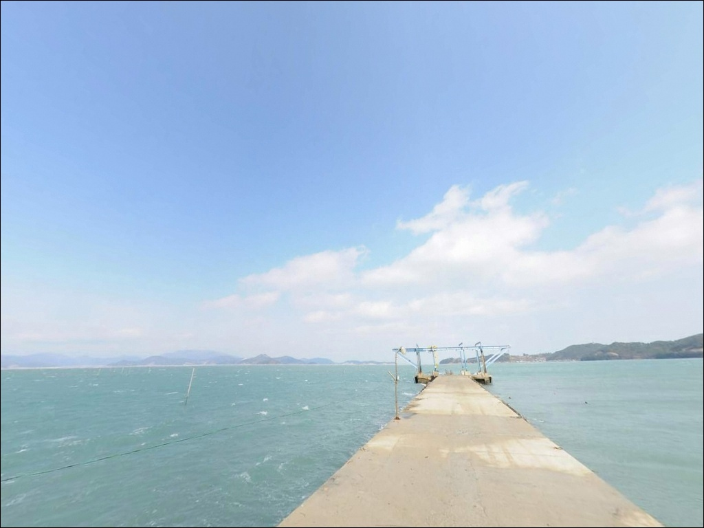
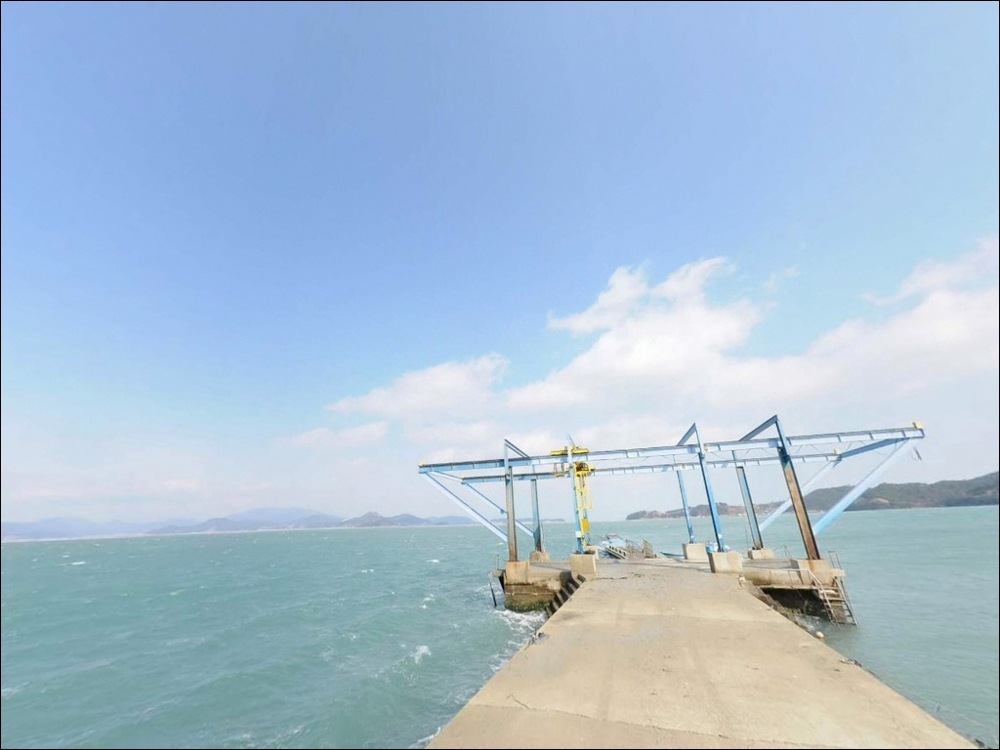
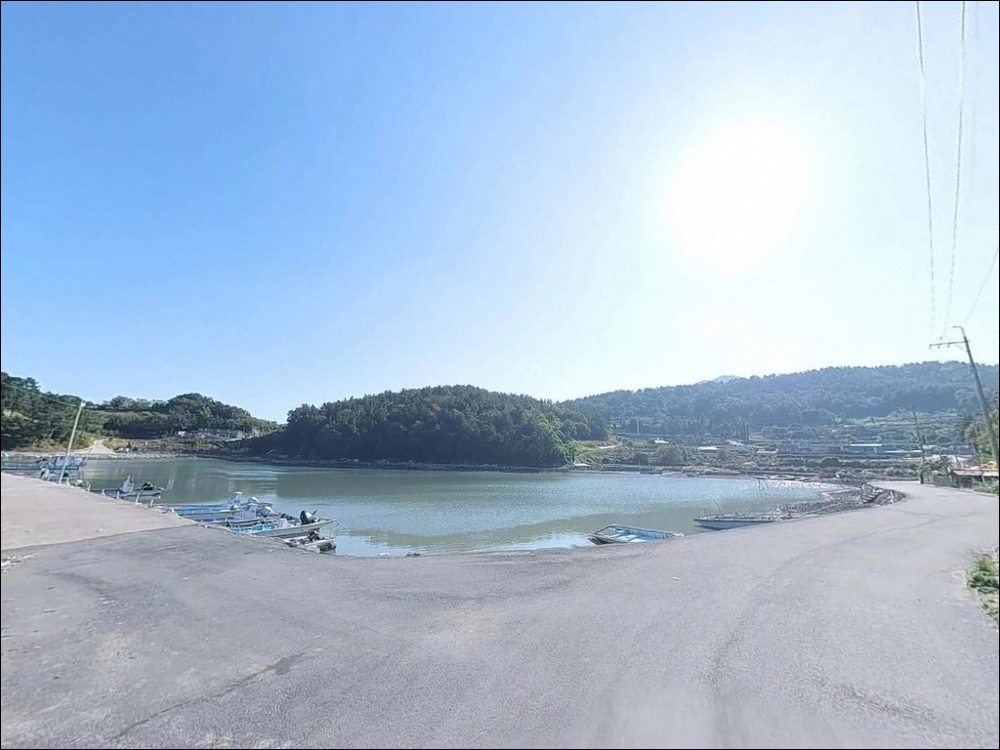

가래방파제, 조약도 전남 완도군 주말에 훌쩍 떠나기 좋은 바다 차박 낚시 명소
이 페이지에는 광고(제휴 링크 포함)가 있으며, 광고 링크를 통해 구매하면 운영자가 판매 수익 또는 수수료를 받을 수 있습니다. 포인트 사진: 카카오맵 스카이뷰·로드뷰. 이 페이지의 지도·사진 이미지는 카카오맵의 실제 서비스 이미지와 다를 수 있습니다.


포인트 안내
가래방파제 (가래항 방파제)
전남 완도군 약산면 장용리 347-10
가래방파제 외항에서 자리를 잘못 잡으면
강한 조류에 채비가 밀려
낚시 자체가 어려워집니다.
들물과 썰물 방향에 따라
방파제 끝단 와류 구간이 달라지고,
그 차이가 조과를 결정합니다.
이 글은 가래방파제의 지형 구조와
낚시 방식별 공략 조건, 진입 동선과
차박 여건에 집중합니다.
특정 어종 조황 단정과
시설 확정 정보는 이 글의 범위에
포함되지 않습니다.

1. 진입 동선과 포인트 접근성
약산도는 고금대교를 통해 육지와 연결된 섬으로,
차량 진입 자체에 큰 제약은 없습니다.
약산면사무소가 위치한 장용리는
약산도 내에서 면의 중심 생활권이며,
장용리 방면 진입도로는
2차선 기반 정비 도로가 주를 이룹니다.
다만 가래방파제 진입 직전
마을 내부 구간은 1차선 아스팔트로 좁아지며,
차량 교행이 불가능한 구간이 존재합니다.
초행이라면 마을 진입 전
위성지도로 가래4길 구간을 미리 확인하는 편이 좋습니다.
방파제 입구와 선착장 인근에는
넓은 공터가 형성되어 있어
대형 캠핑카도 회차가 가능한 구조입니다.
방파제 시작 지점 좌측 노면 부지에
차량 10대 이상 주차가 가능합니다.

2. 차박 환경과 야간 체류 여건
방파제 입구 공터는 넓은 편이라
낚시 후 차 안에서 하룻밤 머무는 용도로
활용 가능한 구조입니다.
방파제를 따라 가로등이 설치되어 있어
야간 시야 확보가 되는 편이며,
민가와 약 200m 거리가 있어
소음 간섭이 적은 환경입니다.
다만 장용리는 약산면 중심 생활권으로
민가 밀집도가 약산도 내에서 높은 지역입니다.
완전한 외딴 노지 분위기를 기대하기는 어렵고,
차박 프라이버시 측면에서는
당목항 인근 해동리 방향이
더 조용한 환경을 제공합니다.
약산도 외해와 직결되는 위치 특성상
기상 상황에 따라 바람 영향이 직접 유입될 수 있습니다.
출발 전 완도 기상청 예보를 확인하고,
강풍 예보 시에는 차박 계획을
재검토하는 편이 안전합니다.


3. 주변 편의시설 및 인프라 현황
방파제 인근에는 편의점이나 식당이 없습니다.
식수·얼음·낚시 소품은 출발 전 모두 준비하는 편이 맞습니다.
완전 자급 체제로 진입하는 것이
이 포인트의 기본 준비 방식입니다.
약산면 소재지 방향으로 차량 5~7분만 이동하면
농협하나로마트, CU 편의점, 식당, 보건소, 약국이
모두 집중되어 있습니다.
출조 전 마지막 보급을 이곳에서 마치고
방파제로 이동하는 동선이 효율적입니다.
응급 상황 발생 시
약산면 보건소까지 거리가 가깝고,
고금대교를 거쳐 강진 방면 의료기관으로
이동하는 경로도 확보되어 있습니다.
출발 전 연료 확인과 비상약품 준비는
기본 사항입니다.

4. 방문 전 반드시 챙겨야 할 준비사항
가래방파제를 처음 찾는다면
물때 확인이 가장 먼저입니다.
약산도 동쪽 해역은 들물과 썰물이
뚜렷하게 교차하는 구조로,
조류 방향에 따라 유효한 낚시 자리가 달라집니다.
바다타임에서 장용리 기준 물때를 확인하고
적정 타이밍에 맞춰 출발 시각을 조정하는 것이
기본 전략입니다.
외항 테트라포드 구간은 발판 선택이 제한적입니다.
테트라포드 전용 신발과 구명조끼는
외항 진입 시 반드시 착용해야 합니다.
야간 낚시라면 헤드랜턴도 필수이며,
단독 출조보다 동반자와 함께하는 것이 안전합니다.
마을 선착장이 함께 운영되는 공간입니다.
어선 이동 동선과 어구에 접촉하지 않도록
자리를 선정하는 것이 기본 매너입니다.
낚시 후 밑밥과 쓰레기는 반드시 수거해
약산면 소재지 지정 장소에 배출해야 합니다.

5. 지형 기반 낚시 여건 분석
가래방파제는 약 100m 길이의 일자형 방파제로,
외항은 테트라포드로 구성되어 있고
내항은 석축과 평지 구조입니다.
방파제 외항 끝단 기준 수심은
7~9m 내외로 확보되며,
바닥은 모래와 여밭이 섞인 구조입니다.
약산도 동측 해역에 위치한 이 방파제는
들물과 썰물의 소통이 강하게 형성되는 구간입니다.
특히 방파제 끝단에서는
조류 방향 전환 시 와류가 형성되는데,
이 구간이 이 포인트에서 가장 집중도 높은
낚시 자리입니다.
내항은 상대적으로 조류가 완만하며
수심이 외항보다 얕은 편입니다.
외항과 내항을 비교하면
수심·조류·어류 활동 모두
외항 끝단 구간에 집중되는 구조입니다.
출조 전 최신 조황은 꼭 검색해 보시기 바랍니다.


6. 외항 테트라포드 구간에서 조과를 바꾸는 낚시 방식
이 포인트에서 가장 잘 맞는 낚시 방식은
찌낚시입니다.
외항 테트라포드 구간에서
조류가 흐르는 방향으로 채비를 흘리면
감성돔과 뱅에돔을 공략하기에
적합한 조건이 갖춰집니다.
끝단 와류 구간에 채비가 들어갈 때
입질 집중도가 높아지는 편입니다.
원투낚시도 이 포인트 구조에 잘 맞습니다.
내항보다는 외항과 방파제 끝단 방향으로
원거리 캐스팅을 하는 방식이 유효하며,
도다리·보리멸·붕장어를 기대해볼 수 있는
모래·여밭 혼합 바닥 조건이
갖춰져 있습니다.
에깅도 시즌에 따라 활용 가능합니다.
방파제 주변 석축과 테트라포드 경계면에서
가을철 갑오징어와 주꾸미 에깅이 이루어지는 구조입니다.
수심 변화와 조류 흐름이 동시에 형성되는 이 포인트는
에기 채비가 힘을 발휘하기 좋은 지형입니다.

7. 대안 포인트와 플랜 B 동선
가래방파제에서 자리가 여의치 않거나
조황이 기대에 못 미칠 경우,
가장 먼저 이동할 대안은
장용항 방파제입니다.
가래방파제에서 500m 이내에 위치한 지방어항으로,
규모가 더 크고 시설이 안정적인 구조입니다.
약산도 일주로를 따라 이동하면
약산면 해안선 곳곳에 소형 방파제가 분포합니다.
득암항을 포함한 약산면 주요 방파제군을
당일 조류 상황에 맞춰 선택적으로 탐색하는 방식도
이 권역에서 효과적인 이동 전략입니다.
약산면 외곽 당목항은
가래방파제보다 규모가 크고
수심이 깊어 기상 악화 시에도
안전하게 낚시할 수 있는 대안 포인트입니다.
차박 여건 측면에서도
해동리 방향의 당목항 인근이
장용리보다 프라이버시가 나은 환경입니다.

조류 타이밍을 읽는 낚시인에게
가래방파제는 충분한 포인트입니다
찌낚시로 감성돔을 노리거나
에깅으로 갑오징어를 공략하고 싶은 낚시인에게
가래방파제 외항 테트라포드 구간은
지형 조건이 잘 맞는 구조입니다.
약산면 소재지 편의시설이 가까워
준비 부담도 크지 않습니다.
반면 물때를 고려하지 않고 사리 전후에 찾아가거나,
진입로를 사전에 확인하지 않은 대형 차량이라면
현장에서 어려운 상황을 만날 수 있습니다.
조류 방향 확인, 진입로 사전 점검, 자급 준비
이 세 가지를 갖추면
조용한 약산도 낚시를 제대로 즐길 수 있는 곳입니다.
야간 낚시 후 방파제 입구 공터에서
조용히 하룻밤 머무는 차박 일정이라면,
당목항 동선까지 묶어
약산도 일주 낚시 여행으로 이어가는
계획도 충분히 만들 수 있습니다.